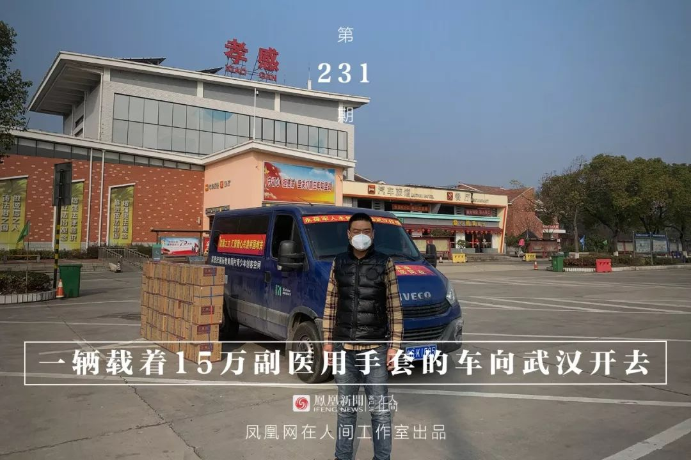
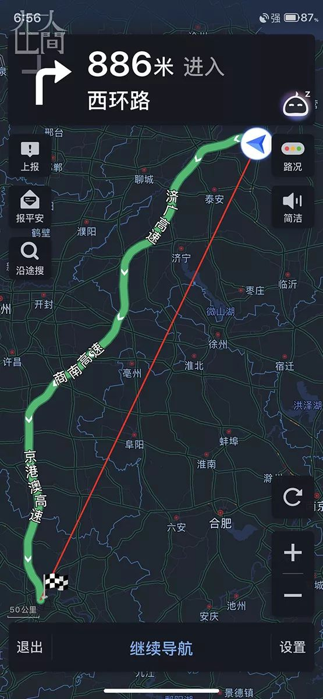
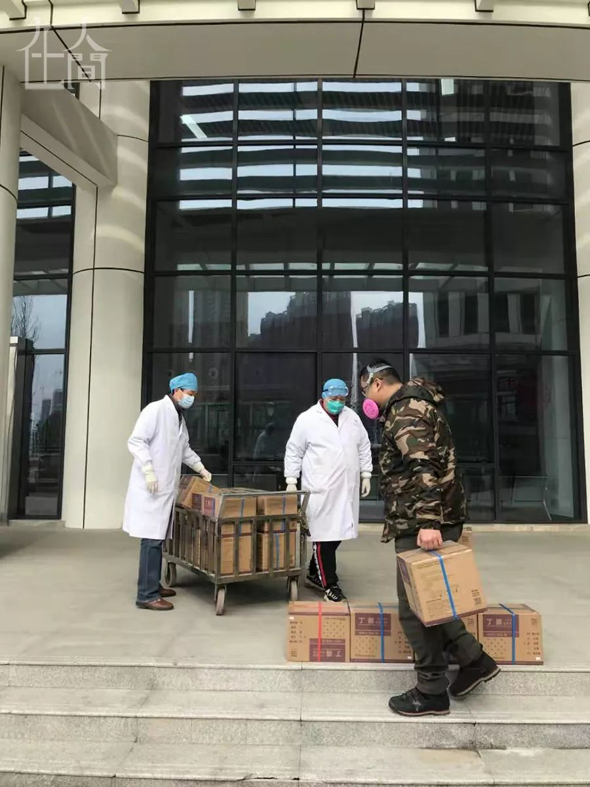
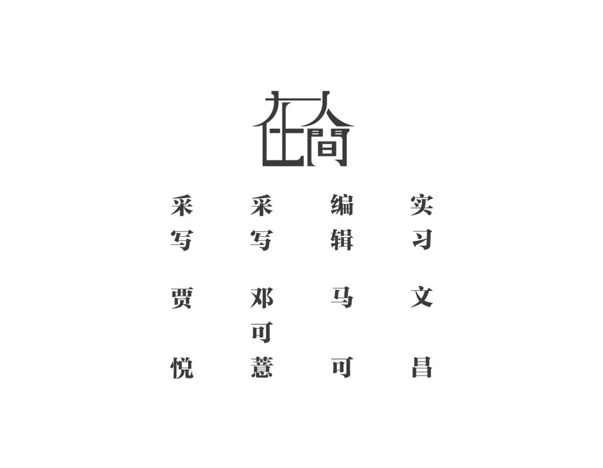

疫情之下，闯关到“前线”的海外捐赠物资
原文链接 备份链接 在一个叫“侠义帮”的海外捐助信息共享群中，廖女士说：“其实挺震撼的，以前一定会能听到各种风声和噪音。只有这次，真的是全球的华人和友人都在一起出钱出力，基本看不见负面消息。” 文 | 余晓璐 吴敏霞 编辑 | 沈小山 …


王晓又要离开家了，在武汉正式封城的第五天。
离家前，母亲感觉到他的坐立不安，嘴里一直念叨着：“走来走去的这是干啥？不能消停点儿吗？”她知道儿子又要出去搞事情了，只是一听到“武汉”两字心里还是咯噔一下。
从1月20日开始，王晓开始关注新型冠状病毒肺炎，他恨不得24小时盯着手机刷消息。后来，他通过各类渠道，加入了武汉物资对接群。群里实时滚动发布一线告急的相关信息，他再也坐不住了：“没想到物资可以匮乏到这种地步，那么多医护人员缺乏最起码的防护？正在前线‘裸奔’？简直无法想象！”
行动
疫情爆发初期，各大渠道的口罩已出现脱销的趋势，王晓把给儿子准备的压岁钱拿来抢了1500只医用外科口罩，顺丰快递到武汉大学中南医院。随着形势越来越严峻，他觉得是时候要大规模调集物资亲赴武汉了，而且越快越好。

■ 1月27日18：56分王晓开启地图准备出发。
1月27日（大年初三）傍晚，王晓戴着口罩，拉着满满一车自筹丁腈医用防护手套，以及一桶康师傅红烧牛肉面加六罐红牛，独自从山东淄博出发了。“出发前儿子非要和我一起去，我团队的其他人也盯着副驾驶的位置，我才不带他们，你看看这有限的空间，多带一个人少拉多少箱手套啊，你说是不是？”
这次购买医疗专用手套的善款，全部来自于团队的募捐，以及身边爱心人士的资助，捐赠数额为126208元。
“太难搞到了，哪儿哪儿都缺。”王晓托了私人关系，才联系到这批符合医用标准且证书齐全的手套，同时能以对公打入厂家账户的形式交易，统一开具发票留存，这一切保证了物资的交接流程合法正规。
一桶泡面生扛40小时
1月28日上午，经过15个小时的长途跋涉，王晓抵达武汉，在高速路口与之前联络到的几名志愿者做交接。来交接的是几名年轻利索的男生，大家都戴着口罩，谁也看不清谁的表情，不知对方长什么模样，大家就是迅速干自己手里的活，见了面也没有多余的寒暄。
随后，这15万副手套按照流程陆续分发到武汉儿童医院、武汉大学中南医院、湖北谷城第二人民医院等七所医院。从淄博出发到物资送到武汉当地医院，王晓只用了不到20个小时。
完成一系列交接工作后，王晓在群里和大家报平安，有人说“武汉人民感谢你”。随后，王晓从车里拿出给自己准备的一桶泡面，热水一冲，调料的香味扑鼻而来，早已饥肠辘辘的王晓开始狼吞虎咽。这距王晓的上一顿饭已经间隔将近20小时，吃完泡面，他马上返回淄博，路上又是15个小时，这一桶泡面生扛了40个小时。

■ 40小时唯一的一餐：一盒方便面。
返回被隔离
从山东到湖北往返近2000公里的路程，王晓加了六次油，每次在河南境内小憩半小时。一路不停循环两首歌：阿冗的《你的答案》，还有朴树的《平凡之路》；一边听着“打破一切恐惧我能找到答案”，一边看着群里不断传来的消息和图片泪流满面。
返程的途中，王晓接到多个来自志愿者和记者的电话，询问武汉一线的情况以及返回山东后的安排，“一路上聊的都是疫情这些事，也没什么机会和家人通太久的话。还好家人已经习惯自己这么多年一直在东奔西跑，这次也只是在路上打个电话，报个平安罢了。”
他原本打算在淄博站服务区和团队兄弟交接物资，再直接返回武汉。然而，此时山东已启动重大突发公共卫生事件一级响应，凡是湖北来淄博人员不论什么原因，都需按照规定隔离两周观察。
“抱歉，我失信了”，他在志愿者群里告诉大家已经平安返回，接下来只能远程帮大家筹集应急物资。赶回淄博后，王晓只想狠狠睡一觉，等第二天30万副手套生产出来，再第一时间联系物流发往武汉。“因为物资越来越紧缺，一刻都耽误不起。”
相信老天不会惩罚善良的人
1982年的王晓，是山东淄博一名拥有九年军龄的老兵，2009年退伍后，从事煤炭铁路物流运输工作至今。最初接触到公益，是因2008年汶川地震，他以志愿者的身份亲赴一线，所到之处满目疮痍，他的内心受到极大的震撼。回到家乡，他火线成立山东老兵公益助学志愿者服务队，以帮助灾后的孩子们继续上学。
从汶川地震至今，王晓和他的团队每年至少投入十几万做公益项目，这些公益款大都来自煤炭物流板块，据王晓介绍，他每年在这一板块的收入已达上百万，足以支撑其做公益。
王晓的儿子今年16岁，去年此时，他正带着儿子在武汉旅游，武汉大学是他们打卡的第一站。“我实在太喜欢武大了，在校门口看着国立武汉大学这几个字就莫名激动，我告诉儿子一定要好好学习，以后上武大这样的知名学府。”
而2020年这一趟特殊的武汉之旅，王晓感慨颇深。“医护人员太不容易了，我发自内心敬佩他们。出发前，我哥们儿说，你管好自己当地的医护人员就行了，去武汉凑什么热闹？我当即反驳，当地的医护人员会尿裤子吗？需要穿纸尿裤吗？也吃不上饭吗？他立马就闭嘴了。”

■ 志愿者已将手套送到医院。
王晓说，自己和战友都是平凡的人，他们做的也是些平凡事儿。从汶川地震到现在，凡是有灾难发生时，大伙都积极主动去做志愿者，就想贡献一份力量。他说自己不惧怕病毒，“我就是见到这种事就想往前冲的人。我不怕感染，因为我相信老天不会惩罚善良的人。”
王晓还有一个朴素的愿望，希望儿子以后能成为医生或律师，向钟南山院士一样，从事一份可以帮助到他人的职业，做一个对社会有用的人。当然，眼下最重要的是，疫情快点结束吧，大家都有好日子过。



新型肺炎疫情牵动人心，
《在人间》现面向全国网友征稿：
疫区影像日记
如果你身处疫区
请你用照片（视频）和文字记录
你所听闻和见到的一切
照片不少于3张
文字不少于300字
投稿方式：微信联系人间君（zairenjianliving）

原文链接 备份链接 在一个叫“侠义帮”的海外捐助信息共享群中，廖女士说：“其实挺震撼的，以前一定会能听到各种风声和噪音。只有这次，真的是全球的华人和友人都在一起出钱出力，基本看不见负面消息。” 文 | 余晓璐 吴敏霞 编辑 | 沈小山 …
原文链接 备份链接 武汉封城后的逆行者 空荡荡的武汉城区。自1月23日10时起，武汉全市关闭公共交通。本刊记者/黄孝光 摄（下同） 1月23日，武汉封城，此时，护士梅伊和胡云云成了逆行者。 她们是大学同学，毕业后分别去了武汉华润武钢总医院 …
原文链接 备份链接 他觉得自己像一个巨大的电插座，身上插满了孔，求助信息和资源提供信息被一起插到他身上，他再来牵线对接。 文 | 谢婵 李叙瑾 编辑 | 小豆 22岁的梅浩宇窝在出租屋里，吃光了13包泡面和3大袋零食，每天睁开眼睛，他就开 …
原文链接 备份链接 自新型肺炎疫情爆发以来，湖北乃至全国多个省份的医院因防疫物资短缺，向社会发出求助。而另一种声音却在说防疫物资是充足的，没有短缺。一时之间，防疫物资成为了薛定谔的猫。 今日来信的这位作者，便是自发为一线医院筹集防疫物资的 …
原文链接 备份链接 本文由娱志The Review原创出品 华东师范大学传播学院学生娱评号 转载需申请授权 作者 | 扣肉 编辑 | 拾贰 导语 在今年的救助行动中，当地政府的某些做法，反向激活了民间救助和志愿行动的效力。这次疫情，至 …